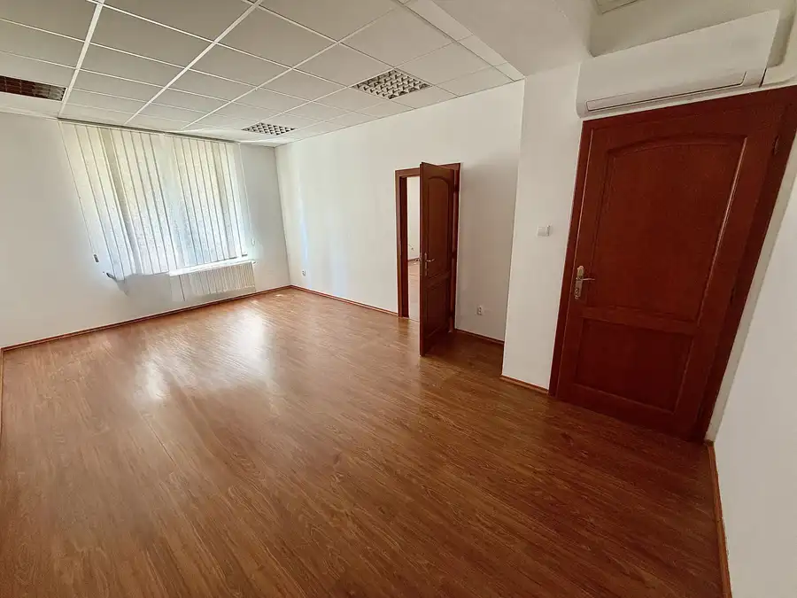
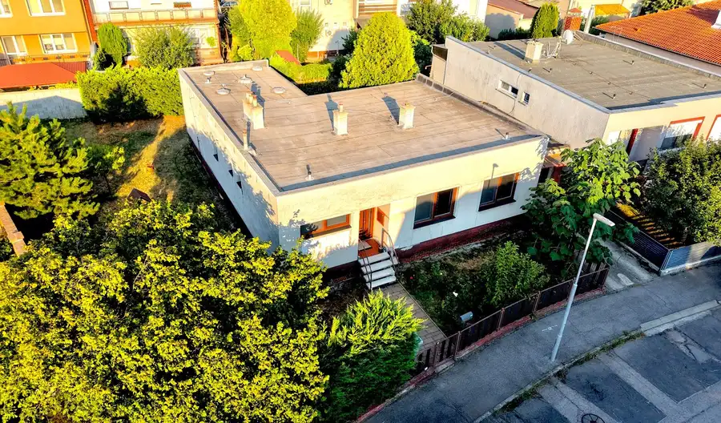
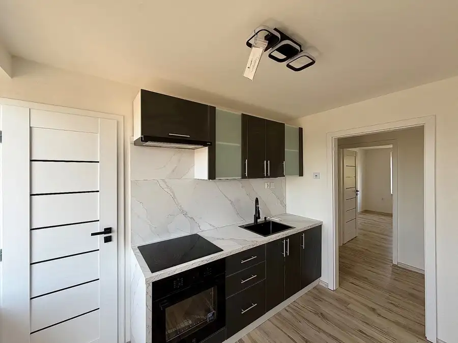
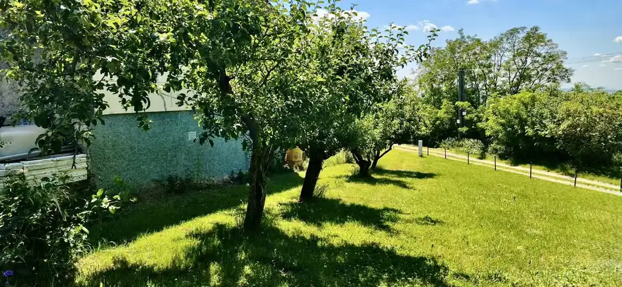
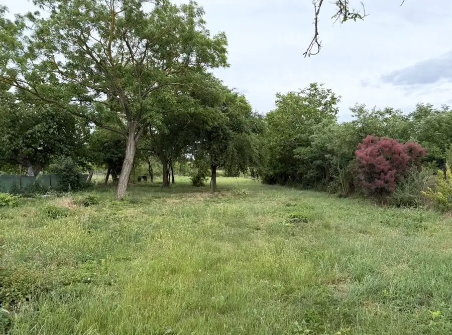

Aktuálna ponuka
10 nehnuteľností, predovšetkým byty, rodinné domy, chaty a chalupy. Každá má vlastnú stránku s fotkami, popisom a mapou.
Prezrieť ponuku
Štefan MolnárRealitný maklér
Realitný maklér · MOLNAR reality s. r. o.
Predaj a prenájom nehnuteľností · Nové Zámky, Imeľ, Komárno

 Chaty a chalupy10
40 000 €Murovaná chata v meste Nové Zámky
Nové Zámky
16 m²
Realitná kancelária MOLNÁR reality s. r. o. ponúka na predaj murovanú rekreačnú chatu, vhodnú na oddych a trávenie voľných chvíľ v obľúbenej chatovej…
Rodinné domy10
89 900 €3 izbový rodinný dom v obci Imeľ
Imeľ
3-izbový247 m²
MOLNÁR reality s. r. o. Vám ponúka na predaj 3-izbový rodinný dom s veľkým pozemkom stavaný v roku 1975 v obci Imeľ. Rodinný dom sa nachádza na…
Byt10
129 900 €ZNÍŽENÁ CENA! Prerobený 3 izbový byt s loggiou v meste Komárno
Komárno
3-izbový61 m²6. podlažie
Realitná kancelária MOLNÁR reality s. r. o. ponúka na predaj moderne zrekonštruovaný a kompletne zariadený 3-izbový byt s loggiou vo vyhľadávanej…
Chaty a chalupy10
40 000 €Murovaná chata v meste Nové Zámky
Nové Zámky
16 m²
Realitná kancelária MOLNÁR reality s. r. o. ponúka na predaj murovanú rekreačnú chatu, vhodnú na oddych a trávenie voľných chvíľ v obľúbenej chatovej…
Rodinné domy10
89 900 €3 izbový rodinný dom v obci Imeľ
Imeľ
3-izbový247 m²
MOLNÁR reality s. r. o. Vám ponúka na predaj 3-izbový rodinný dom s veľkým pozemkom stavaný v roku 1975 v obci Imeľ. Rodinný dom sa nachádza na…
Byt10
129 900 €ZNÍŽENÁ CENA! Prerobený 3 izbový byt s loggiou v meste Komárno
Komárno
3-izbový61 m²6. podlažie
Realitná kancelária MOLNÁR reality s. r. o. ponúka na predaj moderne zrekonštruovaný a kompletne zariadený 3-izbový byt s loggiou vo vyhľadávanej…

Nebytové priestory10 1 000 €Kancelárske priestory v centre mesta Nové Zámky Nové Zámky 3-izbový110 m² MOLNÁR reality s. r. o. Vám ponúka na prenájom kompletne zrekonštruované kancelárske priestory priamo v centre mesta Nové Zámky, ktoré predstavujú…
Rodinné domy10 275 000 €4 izbový rodinný dom v meste Nové Zámky Nové Zámky 4-izbový120 m² Realitná kancelária MOLNÁR reality s. r. o. Vám exkluzívne ponúka na predaj kompletne zrekonštruovaný 4-izbový rodinný dom nachádzajúci sa vo…
Byt8 115 000 €Kompletne prerobený 3 izbový byt v obci Tvrdošovce Tvrdošovce 3-izbový65 m² Realitná kancelária MOLNÁR reality s. r. o. ponúka na predaj priestranný 3-izbový byt po kompletnej rekonštrukcii nachádzajúci sa v obci Tvrdošovce.… Domy a budovy10
203 000 €Budova obchodu a služieb v centre Nových Zámkov
Nové Zámky
Realitná kancelária MOLNÁR reality s. r. o. Vám ponúka na predaj budovu obchodu a služieb nachádzajúcu sa priamo v centre mesta Nové Zámky.…
Domy a budovy10
203 000 €Budova obchodu a služieb v centre Nových Zámkov
Nové Zámky
Realitná kancelária MOLNÁR reality s. r. o. Vám ponúka na predaj budovu obchodu a služieb nachádzajúcu sa priamo v centre mesta Nové Zámky.…

Chaty a chalupy5 28 500 €Chata v obci Jelenec Jelenec 36 m² Realitná kancelária MOLNÁR reality s. r. o. ponúka na predaj murovanú rekreačnú chatu nachádzajúcu sa v obci Jelenec, v príjemnom a pokojnom…
Pozemok2 62 900 €Stavebný pozemok v obci Malá Máňa Maňa 2384 m² Pozemok s celkovou výmerou 2 384 m² sa nachádza v zastavanom území obce a predstavuje výbornú príležitosť na výstavbu rodinného domu, prípadne ako…Tomuto výberu zatiaľ nezodpovedá žiadna ponuka. Napíšte mi, čo hľadáte.
Volám sa Mgr. Štefan Molnár. Som realitný maklér kancelárie MOLNAR reality s. r. o. a pôsobím predovšetkým v lokalitách Nové Zámky, Imeľ, Komárno a Tvrdošovce (Nitriansky kraj).
10 nehnuteľností, predovšetkým byty, rodinné domy, chaty a chalupy. Každá má vlastnú stránku s fotkami, popisom a mapou.
Prezrieť ponukuNové Zámky, Imeľ, Komárno, Tvrdošovce, Jelenec a okolie. Ponuku si môžete prezrieť podľa lokality.
Nehnuteľnosti v lokaliteOdhad trhovej ceny, príprava prezentácie, obhliadky, zmluvy a odovzdanie nehnuteľnosti.
Dohodnúť stretnutieNa čo sa pýtate najčastejšie, skôr než sa stretneme.
Odhad trhovej ceny vychádza z aktuálnych ponúk a predajov v lokalite, nie z cenníkových tabuliek. Podmienky Vám poviem pri prvom telefonáte.
Najprv obhliadka a odhad ceny, potom príprava prezentácie (fotografie, popis, inzercia), obhliadky so záujemcami, rezervačná zmluva, kúpna zmluva, návrh na vklad do katastra a odovzdanie nehnuteľnosti. O každom kroku viete vopred.
Najrýchlejšie cez WhatsApp alebo telefón. Termín stretnutia alebo obhliadky dohodneme podľa Vás.